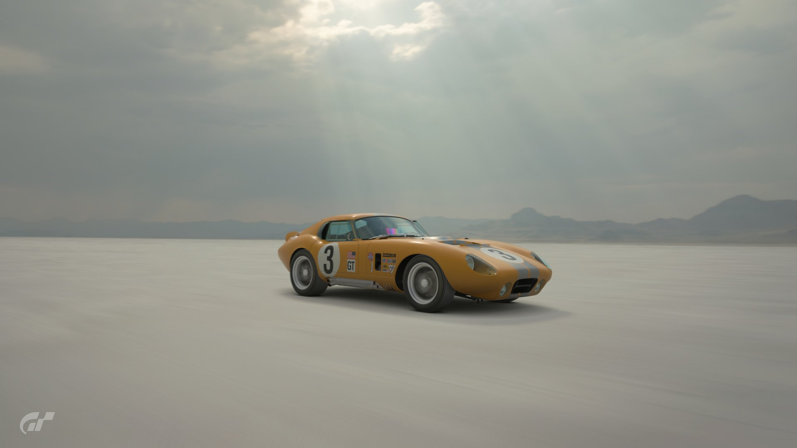

The Shelby Daytona Coupe was born from a limited budget, spare parts, and a desire to compete with the Ferrari 250 GTO in the GT racing class in the years prior to the new Ford GT40 being ready. The Daytona saw much success in its two years of racing with multiple GT class wins in 1964 and 1965, headlined by a class win and fourth overall at the 24 Hours of Le Mans, piloted by Dan Gurney and Bob Bondurant.
From its racing pedigree to its beautiful body design, the Daytona Coupe has been one of my all-time favorite cars for as long as I can remember. I've dreamed of driving this car, and finally decided that the time had come. With the support of my amazing family, and with a little help from my friends, I am making this dream a reality.
My inspiration for this build is to capture the spirit of racing. While it will be road legal, I want this car to feel like a race-car, raw, unrestrained, and unapologetic. I am not building a show car to sit pristine in a garage for me to look at. This car was designed to be driven hard and fast, and I plan to put as many miles as possible on it with no regard for road wear, rock chips, scratches and door dings. I want to enjoy this car, and to share it with as many people as possible.